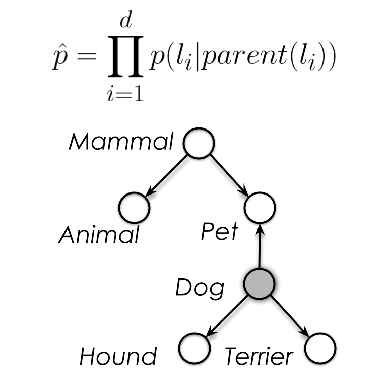
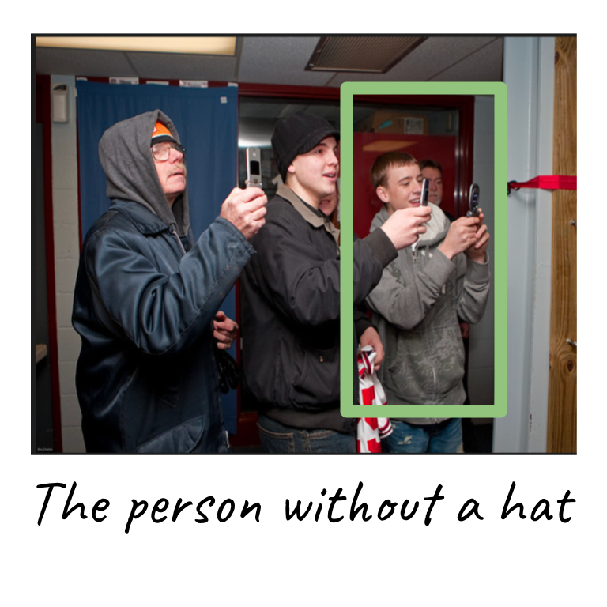
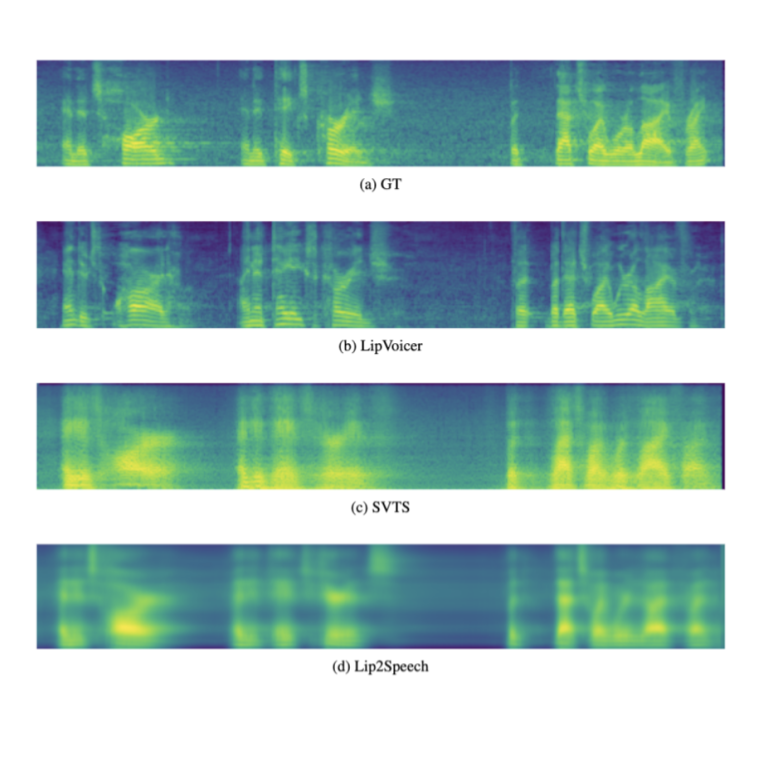
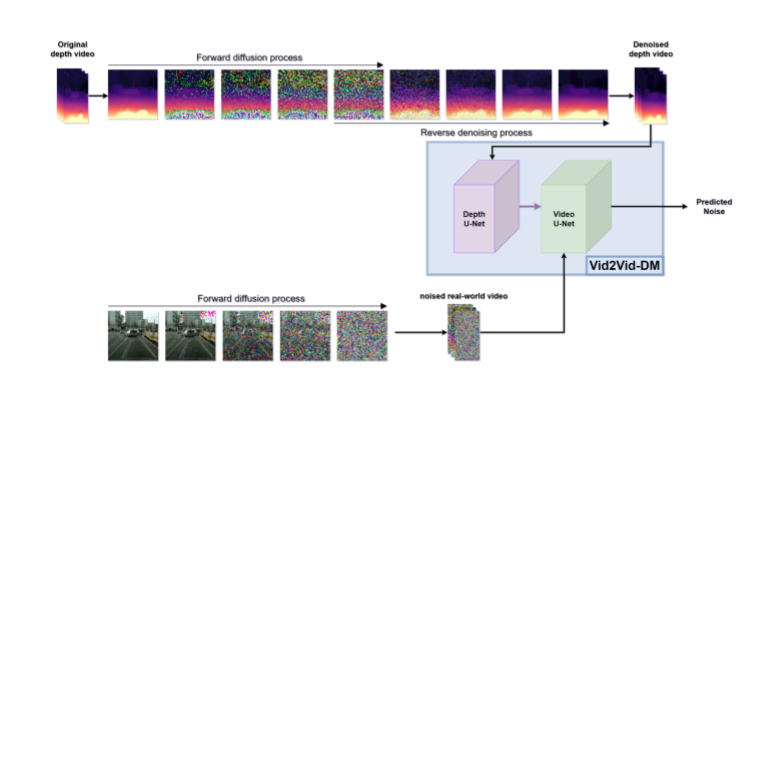

AI Researcher - Vision and Language
PhD Candidate
Gonda Brain Research Center
Bar-Ilan University
Email: brachalior@gmail.com
Research Interests: Vision and Language, Multimodal Perception, Commonsense Reasoning, Human-Machine Interaction, Contextual Reasoning, Planning, Graph ML
PhD Candidate
Gonda Brain Research Center
Bar-Ilan University
Email: brachalior@gmail.com
Research Interests: Vision and Language, Multimodal Perception, Commonsense Reasoning, Human-Machine Interaction, Contextual Reasoning, Planning, Graph ML
Publications
|  |
Lior Bracha, Gal Chechik IEEE Conf. on Computer Vision and Pattern Recognition (CVPR) , 2019 project page / code / bibtex We present IOTA, an approach to model a listener's prior knowledge on the visual world, to maximize the informativeness of a given description. We describe an efficient algorithm to approximate entropy reduction using a tree-structured graphical model. |
|  |
Lior Bracha, Eitan Shaar, Aviv Shamsian, Ethan Fetaya, Gal Chechik, The British Machine Vision Conference (BMVC) Conference , 2023 [ Oral ] project page / code / bibtex |
|  |
Yochai Yemini, Aviv Shamsian, Lior Bracha, Sharon Gannot, Ethan Fetaya ICLR , 2024 project page / code / bibtex |
|  |
Ariel Lapid, Idan Achituve, Lior Bracha, Ethan Fetaya ArXiv , 2023 project page / bibtex |